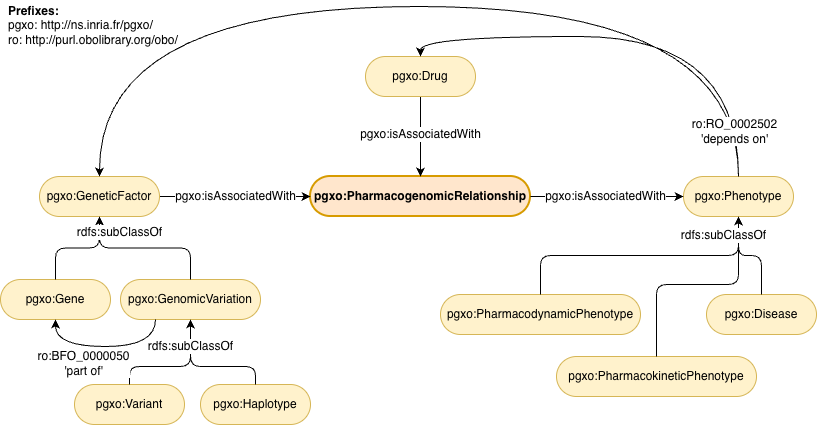

PGxO: a lite Pharmacogenomic Ontology
- Latest version:
- http://ns.inria.fr/pgxo/
- Revision:
- 0.6
- Authors:
- Adrien Coulet (Inria, Inserm, Université Paris Cité, HeKA UMR1346, Paris, France)
- Clément Jonquet (MISTEA, Université de Montpellier, Institut Agro, INRAE, Montpellier, France, and LIRMM, Université de Montpellier, Montpellier, France)
- Pierre Monnin (Université Côte d'Azur, Inria, CNRS, I3S, Sophia-Antipolis, France)
- Download serialization:


- License:

- Cite as:
- Monnin, P., Legrand, J., Husson, G., Ringot, P., Tchechmedjiev, A., Jonquet, C., Napoli, A., & Coulet, A. PGxO and PGxLOD: a reconciliation of pharmacogenomic knowledge of various provenances, enabling further comparison. BMC Bioinformatics 20-S(4): 139:1-139:16 (2019).
- DOI:
- 10.1186/s12859-019-2693-9
Abstract
This document describes the PGxO ontology, under the namespace http://ns.inria.fr/pgxo/. The preferred prefix for this namespace is pgxo.Introduction back to ToC
PGxO is a lightweight and simple ontology to represent, trace, and reconcile knowledge in pharmacogenomics (PGx). Knowledge in PGx involves n-ary tuples representing so-called "pharmacogenomic relationships" and their components of three distinct types: drugs, genetic factors, and phenotypes. In PGxO, such tuples are reified as instances of the class PharmacogenomicRelationship. Components (drugs, genetic factors, phenotypes) are associated with pharmacogenomic tuples through the properties isAssociatedWith and isNotAssociatedWith and their sub-properties, as illustrated below:{kind=link}

Figure 1: Overview of PGxO main classes and properties
{kind=link}
Namespace declarations
| pgxo (default) | <http://ns.inria.fr/pgxo/> |
| dc | <http://purl.org/dc/elements/1.1/> |
| owl | <http://www.w3.org/2002/07/owl#> |
| pgxo | <http://ns.inria.fr/pgxo> |
| prov | <http://www.w3.org/ns/prov#> |
| rdf | <http://www.w3.org/1999/02/22-rdf-syntax-ns#> |
| rdfs | <http://www.w3.org/2000/01/rdf-schema#> |
| ro | <http://purl.obolibrary.org/obo/> |
| xml | <http://www.w3.org/XML/1998/namespace> |
| xsd | <http://www.w3.org/2001/XMLSchema#> |
PGxO: Overview back to ToC
This ontology has the following classes and properties.Classes
- Disease
- Drug
- Gene
- Genetic factor
- Genomic variation
- Haplotype
- Pharmacodynamic phenotype
- Pharmacogenomic relationship
- Pharmacokinetic phenotype
- Phenotype
- Variant
Object Properties
- causes
- decreases
- decreases chance of
- depends on
- does not cause
- does not decrease
- does not decrease chance of
- does not increase
- does not increase chance of
- does not influence
- does not metabolize
- does not transport
- does not treat
- has chance decreased by
- has chance increased by
- has not chance decreased by
- has not chance increased by
- has part
- increases
- increases chance of
- influences
- is associated with
- is caused by
- is decreased by
- is increased by
- is influenced by
- is metabolized by
- is not associated with
- is not caused by
- is not decreased by
- is not increased by
- is not influenced by
- is not metabolized by
- is not transported by
- is not treated by
- is transported by
- is treated by
- metabolizes
- part of
- qualified proxy
- qualified variation
- transports
- treats
Data Properties
PGxO: Description back to ToC
PGxO aims at providing a small set of concepts and roles that may type elements of pharmacogenomic relationships.Cross-reference for PGxO classes, object properties and data properties back to ToC
This section provides details for each class and property defined by PGxO.Classes
- Disease
- Drug
- Gene
- Genetic factor
- Genomic variation
- Haplotype
- Pharmacodynamic phenotype
- Pharmacogenomic relationship
- Pharmacokinetic phenotype
- Phenotype
- Variant
Diseasec back to ToC or Class ToC
IRI: http://ns.inria.fr/pgxo/Disease
- has super-classes
- Phenotype c
Genetic factorc back to ToC or Class ToC
IRI: http://ns.inria.fr/pgxo/GeneticFactor
- has sub-classes
- Gene c, Genomic variation c
Genomic variationc back to ToC or Class ToC
IRI: http://ns.inria.fr/pgxo/GenomicVariation
- has super-classes
- Genetic factor c
- has sub-classes
- Haplotype c, Variant c
Haplotypec back to ToC or Class ToC
IRI: http://ns.inria.fr/pgxo/Haplotype
- has super-classes
- Genomic variation c
Pharmacodynamic phenotypec back to ToC or Class ToC
IRI: http://ns.inria.fr/pgxo/PharmacodynamicPhenotype
- has super-classes
- Phenotype c
Pharmacogenomic relationshipc back to ToC or Class ToC
IRI: http://ns.inria.fr/pgxo/PharmacogenomicRelationship
- has super-classes
- Entity c
- is in domain of
- level of evidence in ClinPGx dp
Pharmacokinetic phenotypec back to ToC or Class ToC
IRI: http://ns.inria.fr/pgxo/PharmacokineticPhenotype
- has super-classes
- Phenotype c
Phenotypec back to ToC or Class ToC
IRI: http://ns.inria.fr/pgxo/Phenotype
- has sub-classes
- Disease c, Pharmacodynamic phenotype c, Pharmacokinetic phenotype c
Variantc back to ToC or Class ToC
IRI: http://ns.inria.fr/pgxo/Variant
- has super-classes
- Genomic variation c
Object Properties
- causes
- decreases
- decreases chance of
- depends on
- does not cause
- does not decrease
- does not decrease chance of
- does not increase
- does not increase chance of
- does not influence
- does not metabolize
- does not transport
- does not treat
- has chance decreased by
- has chance increased by
- has not chance decreased by
- has not chance increased by
- has part
- increases
- increases chance of
- influences
- is associated with
- is caused by
- is decreased by
- is increased by
- is influenced by
- is metabolized by
- is not associated with
- is not caused by
- is not decreased by
- is not increased by
- is not influenced by
- is not metabolized by
- is not transported by
- is not treated by
- is transported by
- is treated by
- metabolizes
- part of
- qualified proxy
- qualified variation
- transports
- treats
causesop back to ToC or Object Property ToC
IRI: http://ns.inria.fr/pgxo/causes
- has super-properties
- influences op
- is inverse of
- is caused by op
decreasesop back to ToC or Object Property ToC
IRI: http://ns.inria.fr/pgxo/decreases
- has super-properties
- influences op
- is inverse of
- is decreased by op
decreases chance ofop back to ToC or Object Property ToC
IRI: http://ns.inria.fr/pgxo/decreasesChanceOf
- has super-properties
- influences op
- is inverse of
- has chance decreased by op
depends onop back to ToC or Object Property ToC
IRI: http://purl.obolibrary.org/obo/RO_0002502
does not causeop back to ToC or Object Property ToC
IRI: http://ns.inria.fr/pgxo/doesNotCause
- has super-properties
- does not influence op
- is inverse of
- is not caused by op
does not decreaseop back to ToC or Object Property ToC
IRI: http://ns.inria.fr/pgxo/doesNotDecrease
- has super-properties
- does not influence op
- is inverse of
- is not decreased by op
does not decrease chance ofop back to ToC or Object Property ToC
IRI: http://ns.inria.fr/pgxo/doesNotDecreaseChanceOf
- has super-properties
- does not influence op
- is inverse of
- has not chance decreased by op
does not increaseop back to ToC or Object Property ToC
IRI: http://ns.inria.fr/pgxo/doesNotIncrease
- has super-properties
- does not influence op
- is inverse of
- is not increased by op
does not increase chance ofop back to ToC or Object Property ToC
IRI: http://ns.inria.fr/pgxo/doesNotIncreaseChanceOf
- has super-properties
- does not influence op
- is inverse of
- has not chance increased by op
does not influenceop back to ToC or Object Property ToC
IRI: http://ns.inria.fr/pgxo/doesNotInfluence
- has super-properties
- is not associated with op
- has sub-properties
- does not cause op, does not decrease op, does not decrease chance of op, does not increase op, does not increase chance of op, does not metabolize op, does not transport op
- is inverse of
- is not influenced by op
does not metabolizeop back to ToC or Object Property ToC
IRI: http://ns.inria.fr/pgxo/doesNotMetabolize
- has super-properties
- does not influence op
- is inverse of
- is not metabolized by op
does not transportop back to ToC or Object Property ToC
IRI: http://ns.inria.fr/pgxo/doesNotTransport
- has super-properties
- does not influence op
- is inverse of
- is not transported by op
does not treatop back to ToC or Object Property ToC
IRI: http://ns.inria.fr/pgxo/doesNotTreat
- has super-properties
- is not associated with op
- is inverse of
- is not treated by op
has chance decreased byop back to ToC or Object Property ToC
IRI: http://ns.inria.fr/pgxo/hasChanceDecreasedBy
- has super-properties
- is influenced by op
- is inverse of
- decreases chance of op
has chance increased byop back to ToC or Object Property ToC
IRI: http://ns.inria.fr/pgxo/hasChanceIncreasedBy
- has super-properties
- is influenced by op
- is inverse of
- increases chance of op
has not chance decreased byop back to ToC or Object Property ToC
IRI: http://ns.inria.fr/pgxo/hasNotChanceDecreasedBy
- has super-properties
- is not influenced by op
- is inverse of
- does not decrease chance of op
has not chance increased byop back to ToC or Object Property ToC
IRI: http://ns.inria.fr/pgxo/hasNotChanceIncreasedBy
- has super-properties
- is not influenced by op
- is inverse of
- does not increase chance of op
has partop back to ToC or Object Property ToC
IRI: http://purl.obolibrary.org/obo/BFO_0000051
- is inverse of
- part of op
increasesop back to ToC or Object Property ToC
IRI: http://ns.inria.fr/pgxo/increases
- has super-properties
- influences op
- is inverse of
- is increased by op
increases chance ofop back to ToC or Object Property ToC
IRI: http://ns.inria.fr/pgxo/increasesChanceOf
- has super-properties
- influences op
- is inverse of
- has chance increased by op
influencesop back to ToC or Object Property ToC
IRI: http://ns.inria.fr/pgxo/influences
- has super-properties
- is associated with op
- has sub-properties
- causes op, decreases op, decreases chance of op, increases op, increases chance of op, metabolizes op, transports op
- is inverse of
- is influenced by op
is associated withop back to ToC or Object Property ToC
IRI: http://ns.inria.fr/pgxo/isAssociatedWith
has characteristics: symmetric
- has sub-properties
- influences op, is influenced by op, is treated by op, treats op
is caused byop back to ToC or Object Property ToC
IRI: http://ns.inria.fr/pgxo/isCausedBy
- has super-properties
- is influenced by op
- is inverse of
- causes op
is decreased byop back to ToC or Object Property ToC
IRI: http://ns.inria.fr/pgxo/isDecreasedBy
- has super-properties
- is influenced by op
- is inverse of
- decreases op
is increased byop back to ToC or Object Property ToC
IRI: http://ns.inria.fr/pgxo/isIncreasedBy
- has super-properties
- is influenced by op
- is inverse of
- increases op
is influenced byop back to ToC or Object Property ToC
IRI: http://ns.inria.fr/pgxo/isInfluencedBy
- has super-properties
- is associated with op
- has sub-properties
- has chance decreased by op, has chance increased by op, is caused by op, is decreased by op, is increased by op, is metabolized by op, is transported by op
- is inverse of
- influences op
is metabolized byop back to ToC or Object Property ToC
IRI: http://ns.inria.fr/pgxo/isMetabolizedBy
- has super-properties
- is influenced by op
- is inverse of
- metabolizes op
is not associated withop back to ToC or Object Property ToC
IRI: http://ns.inria.fr/pgxo/isNotAssociatedWith
has characteristics: symmetric
- has sub-properties
- does not influence op, does not treat op, is not influenced by op, is not treated by op
is not caused byop back to ToC or Object Property ToC
IRI: http://ns.inria.fr/pgxo/isNotCausedBy
- has super-properties
- is not influenced by op
- is inverse of
- does not cause op
is not decreased byop back to ToC or Object Property ToC
IRI: http://ns.inria.fr/pgxo/isNotDecreasedBy
- has super-properties
- is not influenced by op
- is inverse of
- does not decrease op
is not increased byop back to ToC or Object Property ToC
IRI: http://ns.inria.fr/pgxo/isNotIncreasedBy
- has super-properties
- is not influenced by op
- is inverse of
- does not increase op
is not influenced byop back to ToC or Object Property ToC
IRI: http://ns.inria.fr/pgxo/isNotInfluencedBy
- has super-properties
- is not associated with op
- has sub-properties
- has not chance decreased by op, has not chance increased by op, is not caused by op, is not decreased by op, is not increased by op, is not metabolized by op, is not transported by op
- is inverse of
- does not influence op
is not metabolized byop back to ToC or Object Property ToC
IRI: http://ns.inria.fr/pgxo/isNotMetabolizedBy
- has super-properties
- is not influenced by op
- is inverse of
- does not metabolize op
is not transported byop back to ToC or Object Property ToC
IRI: http://ns.inria.fr/pgxo/isNotTransportedBy
- has super-properties
- is not influenced by op
- is inverse of
- does not transport op
is not treated byop back to ToC or Object Property ToC
IRI: http://ns.inria.fr/pgxo/isNotTreatedBy
- has super-properties
- is not associated with op
- is inverse of
- does not treat op
is transported byop back to ToC or Object Property ToC
IRI: http://ns.inria.fr/pgxo/isTransportedBy
- has super-properties
- is influenced by op
- is inverse of
- transports op
is treated byop back to ToC or Object Property ToC
IRI: http://ns.inria.fr/pgxo/isTreatedBy
- has super-properties
- is associated with op
- is inverse of
- treats op
metabolizesop back to ToC or Object Property ToC
IRI: http://ns.inria.fr/pgxo/metabolizes
- has super-properties
- influences op
- is inverse of
- is metabolized by op
part ofop back to ToC or Object Property ToC
IRI: http://purl.obolibrary.org/obo/BFO_0000050
- is inverse of
- has part op
qualified proxyop back to ToC or Object Property ToC
IRI: http://ns.inria.fr/pgxo/qualifiedProxy
qualified variationop back to ToC or Object Property ToC
IRI: http://ns.inria.fr/pgxo/qualifiedVariation
transportsop back to ToC or Object Property ToC
IRI: http://ns.inria.fr/pgxo/transports
- has super-properties
- influences op
- is inverse of
- is transported by op
treatsop back to ToC or Object Property ToC
IRI: http://ns.inria.fr/pgxo/treats
- has super-properties
- is associated with op
- is inverse of
- is treated by op
Data Properties
level of evidence in ClinPGxdp back to ToC or Data Property ToC
IRI: http://ns.inria.fr/pgxo/clinPGxLevelOfEvidence
has characteristics: functional
- has domain
- Pharmacogenomic relationship c
Legend back to ToC
op: Object Properties
dp: Data Properties
References back to ToC
1. Monnin, P., Jonquet, C., Legrand, J., Napoli, A., & Coulet, A. (2017, October). PGxO: A very lite ontology to reconcile pharmacogenomic knowledge units. In _Methods, tools & platforms for Personalized Medicine in the Big Data Era_. [Link](https://hal.inria.fr/hal-01593184/document) 2. Monnin, P., Legrand, J., Husson, G., Ringot, P., Tchechmedjiev, A., Jonquet, C., Napoli, A., & Coulet, A. PGxO and PGxLOD: a reconciliation of pharmacogenomic knowledge of various provenances, enabling further comparison. BMC Bioinformatics 20-S(4): 139:1-139:16 (2019). [Link](https://doi.org/10.1186/s12859-019-2693-9)Acknowledgments back to ToC
PGxO is supported by the PractiKPharma project, funded by the French National Research Agency (ANR) under grant ANR-15-CE23-0028.
The authors would like to thank Silvio Peroni for developing LODE, a Live OWL Documentation Environment, which is used for representing the Cross Referencing Section of this document and Daniel Garijo for developing Widoco, the program used to create the template used in this documentation.